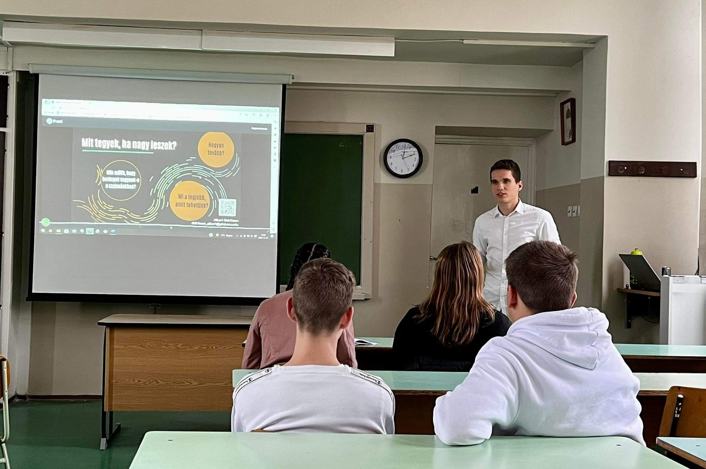

University teaching, talks, and pedagogical experience
Conducted seminars in political philosophy, research design for the social sciences, and qualitative and quantitative methods. Managed both in-person and digital teaching formats.
Taught a session on utilitarianism for MA students of political science.

Mentoring two fellows of the Sentient Futures Project Incubator, working on questions relating to AI sentience and animal welfare.
Not university-level teaching per se, but certainly high-pressure pedagogy with a demanding audience.